Open Composerアプリケーション作成マニュアル
1. はじめに
- すべてのアプリケーションの保存するためのディレクトリ名を
./conf.yml.erbのapps_dirに設定します。ここでは、apps_dir: ./appsとします。 ./apps以下にアプリケーション用のディレクトリを作成します。アプリケーション名をtestとした場合、./apps/testを作成します。- アプリケーションの説明ファイルである
manifest.ymlとWebフォームの設定ファイルであるform.ymlを./apps/testの中に作成します。Embedded Ruby形式で作成する場合は、各ファイル名をmanifest.yml.erbとform.yml.erbにしてください。
1.1. manifest.yml
アプリケーションの説明を記述します。サンプルは下記の通りです。
name: Gaussian
category: Quantum Chemistry
icon: icon.png
description: |
[Gaussian](https://gaussian.com) is a general purpose computational chemistry software package.
related_apps:
OVITO:
icon: ovito.png
GrADS:
icon: bi-airplane-fill
ImageJ:
- name: アプリケーション名（このキーを省略した場合はディレクトリ名が代わりに用いられます）
- category：カテゴリ名
- icon: アイコンのための画像ファイルへのパス。URL、Bootstrapアイコン、Font Awesomeアイコンが利用可能です。Bootstrapアイコンの場合は
icon: bi-airplane-fillのように記述します。Font Awesomeアイコンの場合はicon: fa-solid fa-gearのように記述します - description: アプリケーションの説明
- related_apps: Open OnDemandに登録されているアプリケーションを指定します。指定されたアプリケーションは履歴ページで表示されます。
icon:と同様にアイコン画像などの指定が可能です。画像を指定しない場合、Open OnDemandで用意された画像が代わりに用いられます。
1.2. form.yml
form.ymlは、form、script、header、check、submitというセクションで構成されています。formとscriptは必須項目ですが、header、check、submitは省略できます。
次の図はform、script、headerの担当範囲を示しています。formとscriptとheaderからジョブスクリプトが生成されます。headerを省略した場合は./lib/header.yml.erbが代わりに利用されます。そのため、ほとんどの場合、headerを定義する必要はないでしょう。なお、左上のアプリケーションの説明などはmanifest.ymlの担当範囲です。checkはウィジットに設定された値のチェックをジョブの投入前に行います。submitはジョブを投入する際の前処理を定義します。
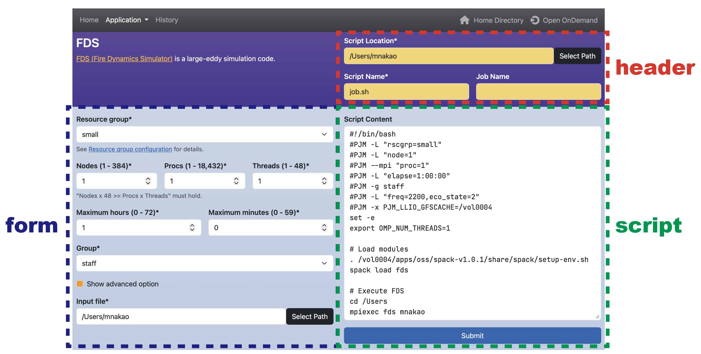
2. ウィジットの説明
form、header、submitセクションでは下記のウィジットを利用して、ジョブスクリプトを生成します。
- numberウィジット：数値の入力欄を表示します。
- textウィジット：テキストの入力欄を表示します。
- emailウィジット：Emailの入力欄を表示します。
- selectウィジット：セレクトボックスを表示します。
- multi_selectウィジット：複数の項目を選択できる入力欄を表示します。
- radioウィジット：ラジオボタンを表示します。
- checkboxウィジット：チェックボックスを表示します。
- pathウィジット：Open Composerが動作しているサーバ上のファイルやディレクトリのパスを選択できる入力欄を表示します。
2.1. numberウィジット
数値の入力欄を表示します。下の例のnodesはウィジットの変数名です。labelはラベル、valueは初期値、minは最小値、maxは最大値、stepはステップ幅です。requiredは必須であるかどうかを指定します。helpは入力欄の下に表示されるヘルプメッセージです。ジョブスクリプトにはscriptセクション内の文字列が表示されます。scriptセクション内の#{nodes}は入力した値に置き換えられます。
form:
nodes:
widget: number
label: Number of nodes (1 - 128)
value: 4
min: 1
max: 128
step: 1
required: false
help: The larger the number, the longer the wait time.
script: |
#SBATCH --nodes=#{nodes}
複数の数値の入力欄を1行で表示することも可能です。その場合、sizeで入力欄の数を記述し、各項目を配列形式で記述します。scriptセクションの#{time_1}と#{time_2}は、1つ目と2つ目に入力した値に置き換えられます。
form:
time:
widget: number
label: [ Maximum run time (0 - 24 h), Maximum run time (0 - 59 m) ]
size: 2
value: [ 1, 0 ]
min: [ 0, 0 ]
max: [ 24, 59 ]
step: [ 1, 1 ]
script: |
#SBATCH -t #{time_1}:#{time_2}:00
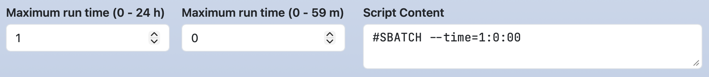
labelが配列形式ではない場合、一行の長いラベルを記述することができます。helpも同様です。
form:
time:
widget: number
label: Maximum run time (0 - 24 h, 0 - 59 m)
size: 2
value: [ 1, 0 ]
min: [ 0, 0 ]
max: [ 24, 59 ]
step: [ 1, 1 ]
script: |
#SBATCH --time=#{time_1}:#{time_2}:00
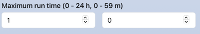
項目ごとのラベルと一行の長いラベルを記述することもできます。配列形式の最初の要素に長いラベルを、2つ目の要素を配列形式で記述ください。
form:
time:
widget: number
label: [ Maximum run time, [0 - 24 h, 0 - 59 m] ]
size: 2
value: [ 1, 0 ]
min: [ 0, 0 ]
max: [ 24, 59 ]
step: [ 1, 1 ]
script: |
#SBATCH --time=#{time_1}:#{time_2}:00
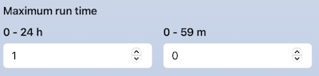
2.2. textウィジット
テキストの入力欄を表示します。
form:
comment:
widget: text
label: Comment
value: test
script: |
#SBATCH --comment=#{comment}
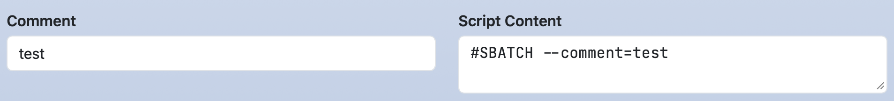
複数のテキストの入力欄を1行で表示することも可能です。
form:
option:
widget: text
label: [ option, argument ]
value: [ --comment=, test ]
size: 2
script: |
#SBATCH #{option_1}#{option_2}
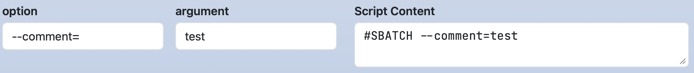
2.3. emailウィジット
Emailの入力欄を表示します。textウィジットとほぼ同じですが、「Submit」ボタンをクリックする際にメールアドレスの形式がチェックされます。
form:
email:
widget: email
label: Email
script: |
#SBATCH --mail-user=#{email}
2.4. selectウィジット
セレクトボックスを表示します。optionsに選択肢を配列形式で記述します。配列の1つ目の要素はセレクトボックスの項目名です。scriptセクションの#{partition}はoptionsの2つ目の要素に置き換えられます。
form:
partition:
widget: select
label: Partition
value: Large Queue
options:
- [ Small Queue, small ]
- [ Large Queue, large ]
script: |
#SBATCH --partition=#{partition}
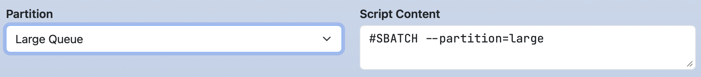
optionsの2つ目の要素は配列で記述することも可能です。下記の例では、scriptセクションの#{package_1}と#{package_2}は、配列の第1要素と第2要素に置き換えられます。後述のmulti_selectウィジット、radioウィジット、checkboxウィジットも同様です。注意点として、すべての2つ目の要素の配列のサイズは同じにしてください。
form:
package:
widget: select
label: Select package
options:
- [ A, [packageA, a.out] ]
- [ B, [packageB, b.out] ]
script: |
module load #{package_1}
mpiexec #{package_2}
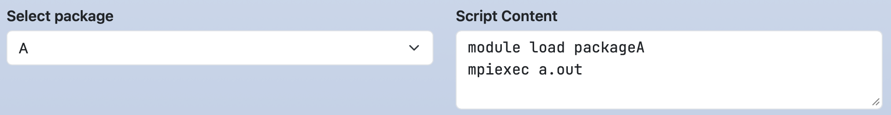
2.5. multi_selectウィジット
複数の項目を選択できる入力欄を表示します。optionsに選択肢を配列形式で記述します。
optionsにない値を入力欄に直接入力して追加することもできます。
optionsから選択した項目は配列の2つ目の要素に置き換えられ、直接入力した項目は入力した文字列そのものに置き換えられます。
form:
load_modules:
widget: multi_select
label: Add modules
value: mpi/mpich-x86_64
options:
- [ mpi/mpich-x86_64, mpi/mpich-x86_64 ]
- [ mpi/openmpi-x86_64, mpi/openmpi-x86_64 ]
- [ nvhpc/24.3, nvhpc/24.3 ]
- [ nvhpc/24.5, nvhpc/24.5 ]
- [ nvhpc/24.7, nvhpc/24.7 ]
script: |
module load #{load_modules}
例えばmpi/mpich-x86_64とnvhpc/24.7を選択した場合は、ジョブスクリプトは下記のように複数行で表示されます。
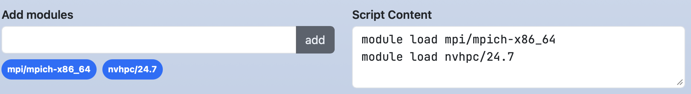
1行で表示したい場合は、separatorで区切り文字を設定します。
form:
load_modules:
widget: multi_select
label: Add modules
value: mpi/mpich-x86_64
separator: " "
options:
- [ mpi/mpich-x86_64, mpi/mpich-x86_64 ]
- [ mpi/openmpi-x86_64, mpi/openmpi-x86_64 ]
- [ nvhpc/24.3, nvhpc/24.3 ]
- [ nvhpc/24.5, nvhpc/24.5 ]
- [ nvhpc/24.7, nvhpc/24.7 ]
script: |
module load #{load_modules}
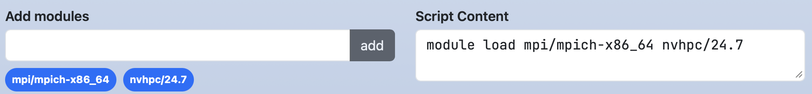
valueに複数の初期値を設定する場合は、配列形式で記述します。
form:
load_modules:
widget: multi_select
label: Add modules
value: [mpi/mpich-x86_64, nvhpc/24.7 ]
options:
- [ mpi/mpich-x86_64, mpi/mpich-x86_64 ]
- [ mpi/openmpi-x86_64, mpi/openmpi-x86_64 ]
- [ nvhpc/24.3, nvhpc/24.3 ]
- [ nvhpc/24.5, nvhpc/24.5 ]
- [ nvhpc/24.7, nvhpc/24.7 ]
script: |
module load #{load_modules}
2.6. radioウィジット
ラジオボタンを表示します。selectウィジットとほぼ同じですが、direction: horizontalが設定可能です。direction: horizontalを設定すると水平方向にラジオボタンを表示できます。direction: horizontalがない場合は、垂直方向にラジオボタンを表示します。
form:
jupyter:
widget: radio
label: Jupyter
direction: horizontal
value: Jupyter Lab
options:
- [ Jupyter Lab, jupyterlab ]
- [ Jupyter Notebook, jupyter ]
script: |
module load #{jupyter}
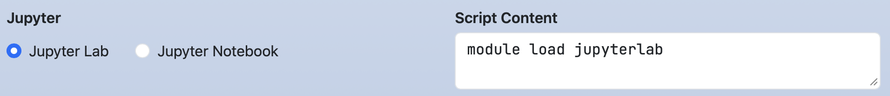
form:
jupyter:
widget: radio
label: Jupyter
value: Jupyter Lab
options:
- [ Jupyter Lab, jupyterlab ]
- [ Jupyter Notebook, jupyter ]
script: |
module load #{jupyter}
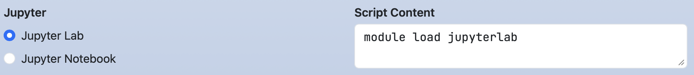
2.7. checkboxウィジット
チェックボックスを表示します。次のようにrequiredを配列形式で設定した場合、チェックボックスの各項目が必須かどうかを設定します。
form:
mail_option:
label: Mail option
widget: checkbox
direction: horizontal
value: [ Fail of job, When the job is requeued ]
required: [ true, false, true, false, false ]
options:
- [ Beginning of job execution, BEGIN ]
- [ End of job execution, END ]
- [ Fail of job, FAIL ]
- [ When the job is requeued, REQUEUE ]
- [ All, ALL ]
script: |
#SBATCH --mail-type=#{mail_option}
次のようにrequiredが配列形式でない場合かつ値がtrueの場合、そのチェックボックスで1つ以上の項目がチェックがされていないとジョブの投入を行うことができない、という設定になります。
form:
mail_option:
label: Mail option
widget: checkbox
direction: horizontal
value: [ Fail of job, When the job is requeued ]
required: true
options:
- [ Beginning of job execution, BEGIN ]
- [ End of job execution, END ]
- [ Fail of job, FAIL ]
- [ When the job is requeued, REQUEUE ]
- [ All, ALL ]
script: |
#SBATCH --mail-type=#{mail_option}
multi_selectウィジットと同様にseparatorの設定を行うことや、radioウィジットと同様にdirectionの設定を行うことができます。
2.8. pathウィジット
Open Composerが動作しているサーバ上のファイルやディレクトリのパスを選択できる入力欄を表示します。show_filesはファイルを表示するかどうかのフラグであり、デフォルトはtrueです。favoritesはショートカットパスを設定できます。
form:
working_dir:
widget: path
label: Working Directory
show_files: false
favorites:
- /lvs0/rccs-aot
script: |
cd #{working_dir}
textウィジットのように任意の文字列を入力することができます。また、「Select Path」ボタンをクリックすると、下記のようなモーダルを利用してファイルやディレクトリを選択できます。
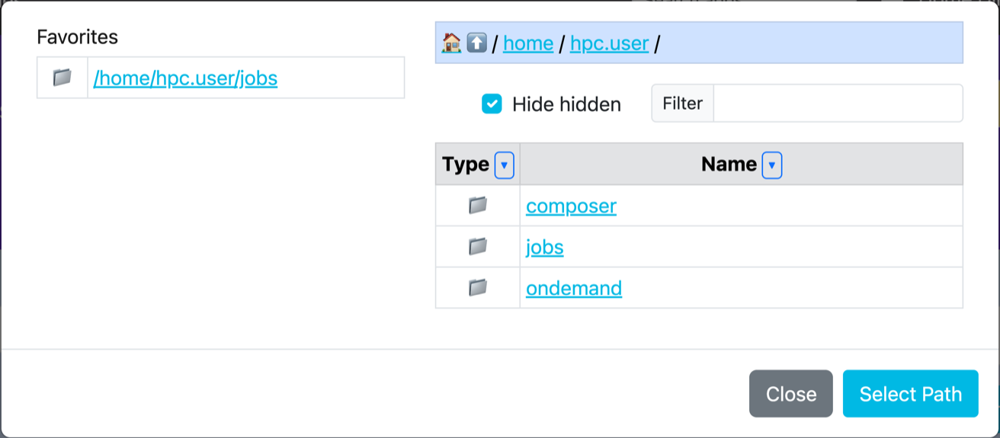
2.9. module_loadウィジット
指定した1つの環境モジュールについて、インストールされているバージョンを一覧するドロップダウンを表示します。
項目はform.ymlには記述しません。ウィジットはLoading…と表示された1つのドロップダウンを描画し、ページの読み込み後にブラウザがアプリケーションの/_module_availにそのモジュールのバージョンを問い合わせて項目を埋めます。
moduleキーは必須であり、検索するモジュール名を指定します。
モジュール名は大文字と小文字を区別せずにモジュールの一覧と照合され、提示される項目は、その一覧で用いられている表記から組み立てられた完全なName/versionの文字列です。
項目は文字列の降順に並びます。バージョンを考慮した比較ではなく単純な文字列の比較であるため、Python/3.9.5がPython/3.11.6より上に並びます。その後、一覧がデフォルトのバージョンを示しており、かつそのバージョンがそのモジュール自身のバージョンに含まれている場合に限り、それが先頭に移動されます。
moduleのほかに有効なキーはlabel、value、help、indentです。
valueは、完全なName/versionの形式で記述し、それと完全に一致する項目を既定で選択します。一致するものがない場合は先頭の項目が選択されます。
optionsキーは無視されます。項目は常にモジュールの一覧から取得されます。
requiredは受け付けられますが、その効果はラベルにアスタリスクを付加することのみであり、フォームの投入時に強制されることはありません。
form:
gromacs_module:
widget: module_load
label: GROMACS module
module: GROMACS
help: Only versions installed on the cluster are listed.
script: |
module load #{gromacs_module}
gmx mdrun -s topol.tpr
モジュール名が一覧に無い場合、またはmoduleキーが無い場合、ドロップダウンはNo modules foundというラベルの空の項目1つだけになります。問い合わせ自体が失敗した場合はError loading modulesと表示されます。
いずれの場合もウィジットの値は空になるため、それを参照するスクリプトの行はジョブスクリプトから除かれます。ただし、参照を#{:gromacs_module}と記述した場合は除かれません（10. 補足を参照）。
このウィジットがscriptセクションやsubmitセクションで参照されている場合、選択を変更すると、スクリプトを再生成するのではなく、既存のmodule loadの行がその場で書き換えられます。
module loadのみからなる行、およびmodule loadに続いてこのウィジット自身のモジュール名（バージョンの有無は問いません）が記述されている行はすべて、module loadと新しい選択に置き換えられ、その行の元のインデントは維持されます。テキストエリア内のそれ以外の部分は、ユーザが入力した行を含めて一切変更されません。
該当する行がまだ存在しない場合は、通常のスクリプトの更新に戻り、テンプレートから行が挿入されます。
モジュールの一覧そのものは、data_dir以下に.module-list-cache.jsonとしてキャッシュされるJSONファイルであり、更新は最大でも24時間に1回です。同じ一覧がすべてのクラスタで使用されます。取得元については、インストールマニュアルのネットワークと外部への依存を参照してください。
このウィジットは自身のoptionsを持たないため、3. Dynamic Form Widgetで説明する動作の起点にはなれませんが、その対象にはなれます（例えばhide-gromacs_moduleやdisable-gromacs_module）。
2.10. dependent_module_selectウィジット
driverとなるウィジットの現在の選択値に応じて、選択肢が動的に読み込まれるドロップダウンを表示します。
あるselectウィジット（例えばアプリケーションのバージョン）が、2つ目のselectで提示すべきモジュールの集合を決定する場合に使用します。
module_loadウィジット（2.9. module_loadウィジット）と同様に、項目はページの読み込み後に/_module_availから取得され、それが届くまでドロップダウンはLoading…と表示します。
driverキーは、値を監視する対象の項目名を指定します。同じページに描画されるウィジットを指定しなければなりません。そうでない場合、ドロップダウンはLoading…のままになります。
判定に用いられる文字列は、driverの選択肢の値、すなわちoptions配列の2つ目の要素であり、ドロップダウンに表示される文字列ではありません（他の箇所と同様に、2つ目の要素が無い選択肢は1つ目の要素が代わりに用いられます）。
optionsキーは、照合条件の一覧です。各項目はmoduleを指定し、任意で次の2つの照合方法のいずれかを指定します。
prefix:driverの値が指定した文字列で始まる場合に一致します。contains:driverの値が指定した文字列をどこかに含む場合に一致します。
項目は記述された順に試され、最初に一致したものが採用されるため、より限定的な条件をより一般的な条件より前に記述してください。1つの項目の中では、prefix:がcontains:より先に判定されます。
どの項目も一致しない場合は、一覧の最後の項目のmoduleがフォールバックとして使用されます。そのため、一般的な場合を最後に置くのが自然です（moduleのみで照合方法を持たない項目は、それ自体では決して一致しないため、最後の項目として置くと純粋に既定値として機能します）。
解決されたモジュール名が変化するたびにバージョンの一覧が再取得され、新しい一覧の先頭の項目が選択されます。解決された名前が変化しない場合、ドロップダウンはそのままになります。
form:
alphafold_module:
widget: select
label: AlphaFold Module
options:
- [AlphaFold 2.3.2, AlphaFold/2.3.2]
- [AlphaFold 3.0.0, AlphaFold/3.0.0]
- [AlphaFold 3.0.1, AlphaFold/3.0.1]
- [AlphaFold 3.0.2, AlphaFold/3.0.2]
alphafold_db_module:
widget: dependent_module_select
label: AlphaFold Database Module
driver: alphafold_module
options:
- prefix: AlphaFold/2.
module: AlphaFold2DB
- prefix: AlphaFold/3.
module: AlphaFold3DB
script: |
module load #{alphafold_module}
module load #{alphafold_db_module}
この例では、driverでAlphaFold/2.3.2を選択するとAlphaFold2DBの利用可能なバージョンが読み込まれ、AlphaFold/3.0.0、AlphaFold/3.0.1、AlphaFold/3.0.2のいずれかを選択するとAlphaFold3DBのバージョンが読み込まれます。
接頭辞は、ドロップダウンに表示されるラベルではなく、選択肢の値（AlphaFold/2.3.2など）に対して判定されることに注意してください。
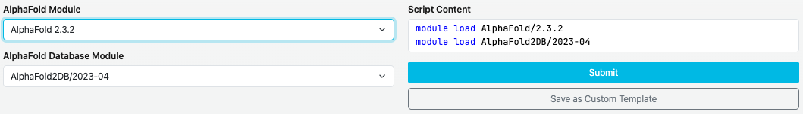
下記の例では、driverの値を区別する部分が文字列の先頭にないため、代わりにcontains:を使用しています。
値に-gpuを含むCUDAのバージョンはcuDNN-GPUを選択し、それ以外は最後の項目に到達します。最後の項目は照合方法を持たないため、既定値として機能します。
form:
cuda_module:
widget: select
label: CUDA Module
options:
- [CUDA 11.8, CUDA/11.8.0 ]
- [CUDA 12.0 (GPU), CUDA/12.0.0-gpu ]
- [CUDA 12.3 (GPU), CUDA/12.3.0-gpu ]
cudnn_module:
widget: dependent_module_select
label: cuDNN Module
driver: cuda_module
options:
- contains: -gpu
module: cuDNN-GPU
- module: cuDNN
script: |
module load #{cuda_module}
module load #{cudnn_module}
2.11. 関数
関数zeropadding(key, digit)は数値に対してゼロパディングを行います。第2引数digitに指定した桁数に満たない場合、不足分を「0」で埋めます。
form:
time:
widget: number
label: [ Maximum run time (0 - 24 h), Maximum run time (0 - 59 m) ]
size: 2
value: [ 1, 5 ]
min: [ 0, 0 ]
max: [ 24, 59 ]
step: [ 1, 1 ]
script: |
#SBATCH --time=#{time_1}:#{zeropadding(time_2, 2)}:00
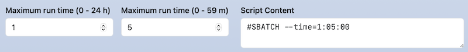
関数calc(expr[, decimalPlaces, roundingMode])は、式exprを計算して結果を返します。第2引数decimalPlacesには、小数点以下の桁数を指定します。省略した場合は0になります。第3引数roundingModeには、丸め方式を指定します。OC_ROUNDING_ROUND（四捨五入）、OC_ROUNDING_FLOOR（切り捨て）、OC_ROUNDING_CEIL（切り上げ）のいずれかを指定できます。省略した場合はOC_ROUNDING_ROUNDになります。
form:
time:
widget: number
label: [ Maximum run time (0 - 24 h), Maximum run time (0 - 59 m) ]
size: 2
value: [ 1, 10 ]
min: [ 0, 0 ]
max: [ 24, 59 ]
step: [ 1, 1 ]
script: |
#{calc(time_1 + time_2 / 60)}
#{calc(time_1 + time_2 / 60, 2)}
#{calc(time_1 + time_2 / 60, 2, OC_ROUNDING_FLOOR)}
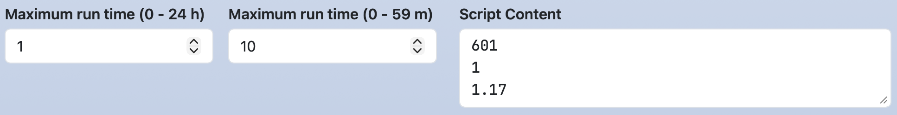
関数dirname(FILE_PATH)と関数basename(FILE_PATH)はディレクトリ名とファイル名を含むパス名から、dirname()はディレクトリ部分を、basename()はファイル部分だけを返します。
form:
input_file:
widget: path
label: Input file
value: /home/test/foo.txt
script: |
cd #{dirname(input_file)}
mpiexec ./#{basename(input_file)}
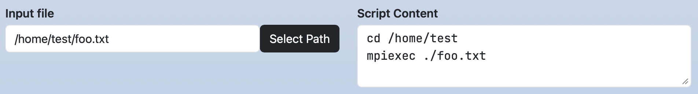
3. Dynamic Form Widget
ウィジットの設定を動的に変更できます。select、multi_select、radio、checkboxウィジットのoptionで設定します。
3.1. ウィジットの設定
min、max、step、label、value、required、helpの各キーの設定を行います。optionsの各配列の第3要素以降にset-(min|max|step|label|value|required|help)-(KEY)[_(num|1st element in options)]:(VALUE)を指定します。
次の例では、node_typeでMediumを選択すると、coresのラベルと最大値はNumber of Cores (1-8)と8になります。
form:
node_type:
widget: select
label: Node Type
options:
- [ Small, small ]
- [ Medium, medium, set-label-cores: Number of Cores (1-8), set-max-cores: 8 ]
- [ Large, large, set-label-cores: Number of Cores (1-16), set-max-cores: 16 ]
cores:
widget: number
label: Number of Cores (1-4)
value: 1
min: 1
max: 4
step: 1
script: |
#SBATCH --partition=#{node_type}
#SBATCH --cpus-per-task=#{cores}
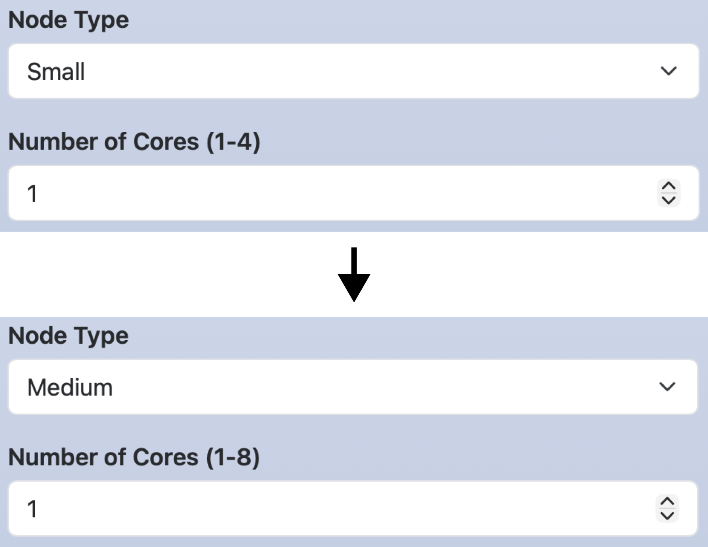
number、text、emailウィジットにおいて複数の入力欄を作っていた場合、設定対象の入力欄の指定に_(num)を用います。次の例では、node_typeでGPUを選択すると、timeの1つ目の入力欄のラベルと最大値がMaximum run time hours (0 - 24)と24になります。
form:
node_type:
widget: select
label: Node Type
options:
- [ 'Standard', 'standard' ]
- [ 'GPU', 'gpu', set-label-time_1: Maximum run time (0 - 24h), set-max-time_1: 24 ]
time:
widget: number
label: [ Maximum run time (0 - 72 h), Maximum run time (0 - 59 m) ]
size: 2
value: [ 1, 0 ]
max: [ 72, 59 ]
min: [ 0, 0 ]
step: [ 1, 1 ]
script: |
#SBATCH --partition=#{node_type}
#SBATCH --time=#{time_1}:#{time_2}:00
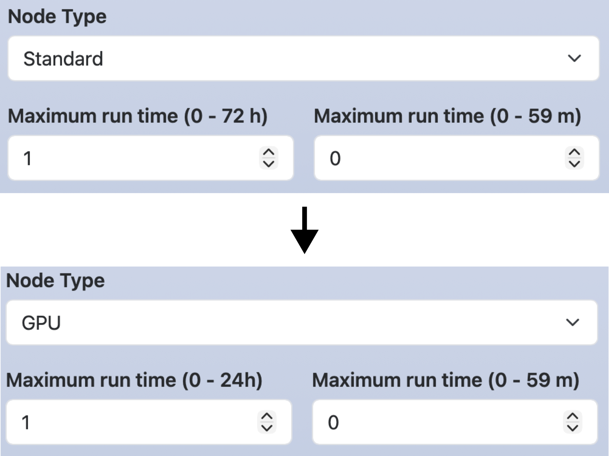
select、radio、checkboxウィジットの場合、設定対象のオプションの指定に1st element in optionsを用います。次の例では、node_typeでGPUを選択すると、enable_gpuのEnable GPUがチェックされます。
form:
node_type:
widget: select
label: Node Type
options:
- [ 'Standard', '' ]
- [ 'GPU', '', set-value-enable_gpu: Enable GPU ]
enable_gpu:
widget: checkbox
options:
- [ Enable GPU, gpu ]
script: |
#SBATCH --partition=#{node_type}
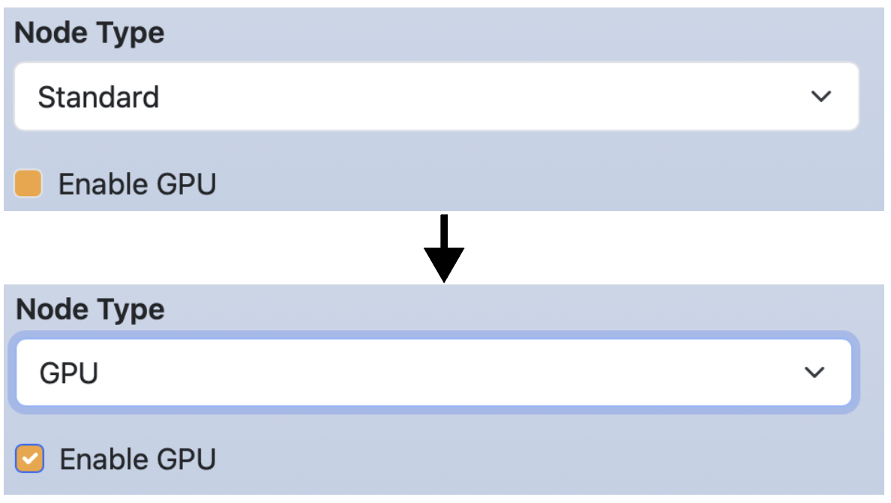
3.2. ウィジットの無効化
ウィジットとオプションを無効化・有効化します。optionsの各配列の第3要素以降に[disable|enable]-(KEY)[-(1st element in options)][_num]を指定します。
次の例ではclusterでFugakuを選択すると、node_typeのGPUのオプションとcuda_verのウィジットが無効化されます。キーを無効化された場合は、そのキーを利用しているscriptセクション中の行も削除されます。
form:
cluster:
widget: select
label: Cluster system
options:
- [ Fugaku, fugaku, disable-node_type-GPU, disable-cuda_ver ]
- [ Tsubame, tsubame ]
node_type:
widget: select
label: Node type
options:
- [ Standard, standard ]
- [ GPU, gpu ]
cuda_ver:
widget: number
label: CUDA version
value: 12
min: 12
max: 14
script: |
module load system/#{node_type}
module load cuda/#{cuda_ver}
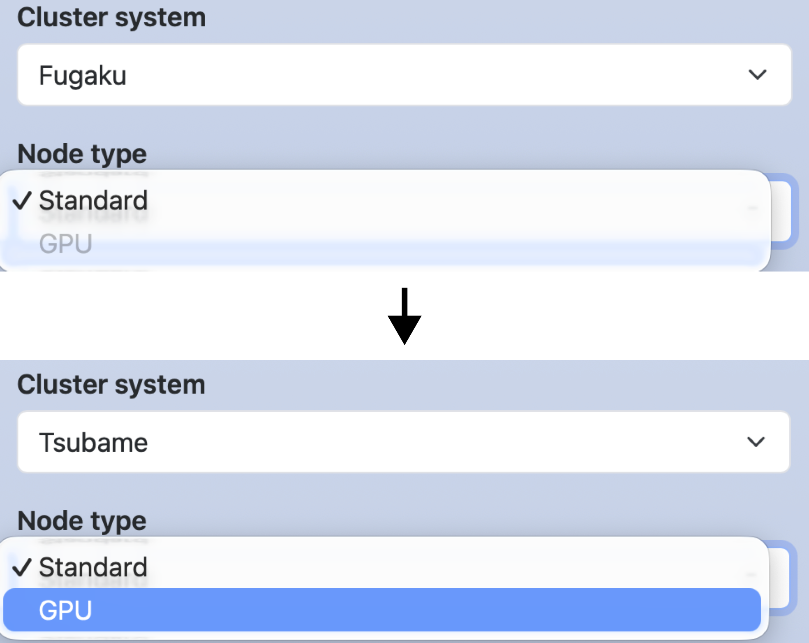
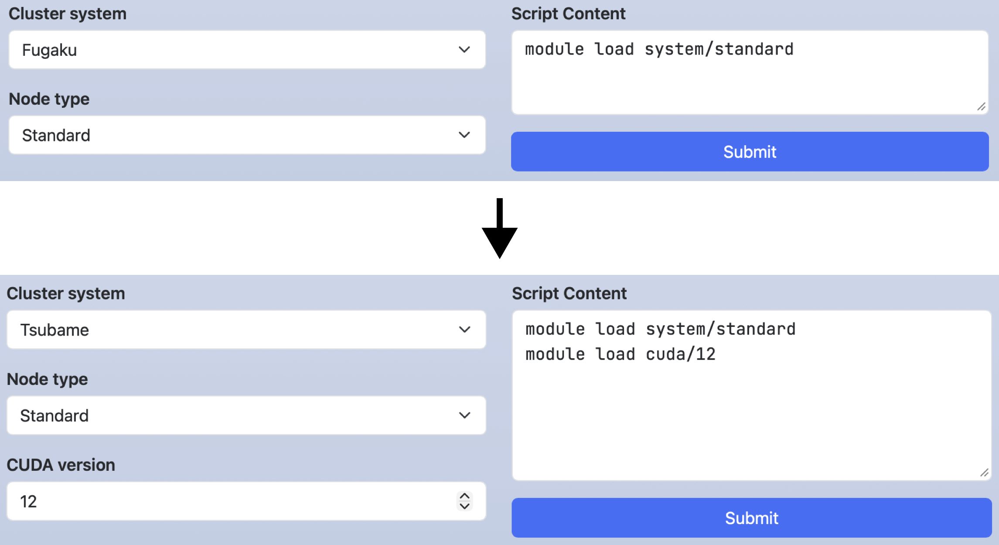
上の例のoptionsは下記のように記述することもできます。この場合、Tsubameを選択したときのみ、node_typeとcuda_verが有効になります。
options: - [ Fugaku, fugaku ] - [ Tsubame, tsubame, enable-node_type-GPU, enable-cuda_ver ]
3.3. ウィジットの非表示化
ウィジットを非表示・表示します。optionsの各配列の第3要素以降に[hide|show]-(KEY)を指定します。
次の例では、hide_advanced_optionsをチェックするとcommentが非表示になります。無効化とは異なり、そのキーのウィジットが表示されないだけであり、そのキーを利用しているscriptセクションの行には影響しません。indentはWebフォームの左側にインデントを作成します。数値は1〜5が入力でき、数値が大きくなるほどインデント幅は大きくなります。
form:
hide_advanced_option:
widget: checkbox
options:
- [ 'Hide advanced option', '', hide-comment ]
comment:
widget: text
label: Comment
value: test
indent: 1
script: |
#SBATCH --comment=#{comment}
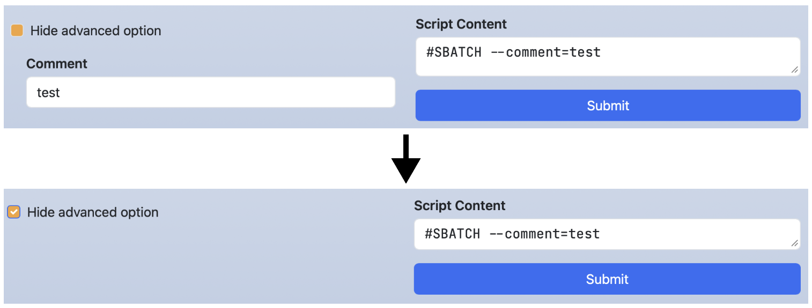
次の例では、show_advanced_optionsをチェックするとcommentが表示されます。
form:
show_advanced_options:
widget: checkbox
options:
- [ 'Show advanced option', '', show-comment ]
comment:
widget: text
label: Comment
value: test
indent: 1
script: |
#SBATCH --comment=#{comment}
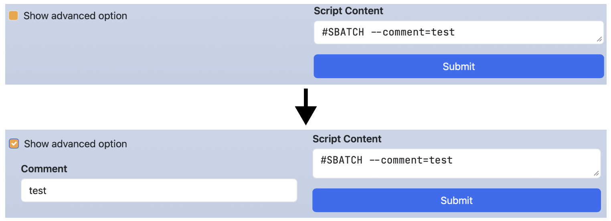
4. 利用可能な組合せ
formセクションとheaderセクションにおいて、各ウィジットと利用可能なオプションとの組合せは下記の表の通りです。optionsのみは必須項目ですが、他の項目は省略可能です。
| Widget | label, value, help, required, indent | options | size | separator | direction | min, max, step |
show_files, favorites |
|---|---|---|---|---|---|---|---|
| number | OK | OK | OK | ||||
| text, email | OK | OK | |||||
| select | OK | OK | |||||
| multi_select | OK | OK | OK | ||||
| radio | OK | OK | OK | ||||
| checkbox | OK | OK | OK | OK | |||
| path | OK | OK |
5. scriptセクション
5.1. ラベルの変更
ジョブスクリプトのラベル（デフォルトは「Script Content」）を変更したい場合はscriptセクションでlabelを設定します。その場合、ジョブスクリプトはcontentに記述します。
form:
nodes:
widget: number
label: Number of nodes
script:
label: Script Details
content: |
#SBATCH --nodes=#{nodes}
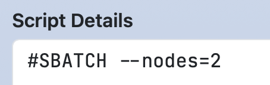
5.2. ファイルの保存
Open Composerはジョブスクリプトの生成だけでなく、アプリケーションで利用するパラメータファイルや設定ファイルの生成も行うことができます。そのような場合、ジョブスクリプトを投入せずに、ジョブスクリプトの保存のみを行う方が適しています。ジョブスクリプトの保存のみを行いたい場合、scriptセクションでaction: saveを設定します。
form:
nodes:
widget: number
label: Number of nodes
value: 1
script:
label: Parameter file
action: save
content: |
num_of_nodes: #{nodes}
この設定を行うと、ボタンのラベルが「Submit」から「Save」に変化します。
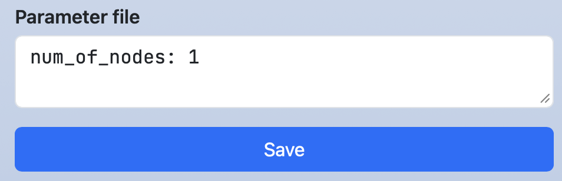
ボタンをクリックすると保存が実行され、画面上部にその保存先が表示されます。その文字のリンクをクリックすると、Open OnDemandのHome Directoryが起動します。また、ターミナルのアイコンがある場合、そのアイコンをクリックするとOpen OnDemandのTerminalアプリケーションが起動します。
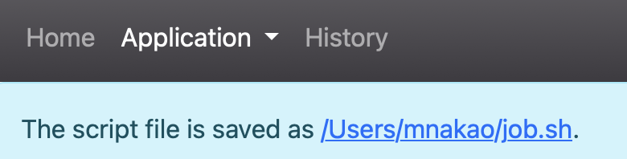
5.3. 非表示化
scriptセクションを非表示化することができます。特殊な変数OC_SCRIPT_CONTENTとDynamic Form Widgetのhide-とを下記のように組み合せて利用します（ERBを用いるため、ファイル名はform.yml.erbであることに注意ください）。
form:
script_content:
widget: checkbox
value: "Hide script content"
options:
- [ "Hide script content", "", hide-<%= OC_SCRIPT_CONTENT %> ]
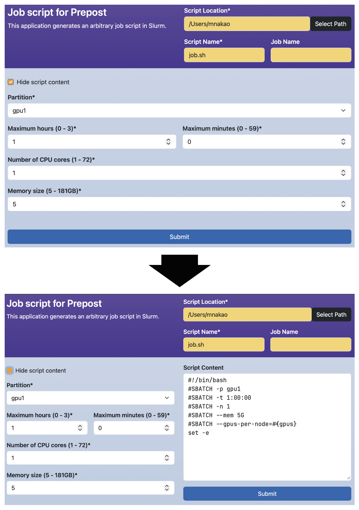
チェックボックスを表示させずに、ジョブスクリプトを隠したい場合は、そのチェックボックスに対してhide-を設定します。
form:
script_content:
widget: checkbox
value: "Hide script content"
options:
- [ "Hide script content", "", hide-<%= OC_SCRIPT_CONTENT %>, hide-script_content ]
5.4. 特殊な変数
scriptセクションでは、下記の特殊な変数も利用できます。
- #{OC_APP_NAME}:
manifest.ymlのnameで定義しているアプリケーション名 - #{OC_DIR_NAME}:
manifest.ymlなどのファイルが保存されているディレクトリ名（各アプリケーションのURLの最後のパス要素） - #{OC_SCRIPT_LOCATION}: ヘッダで定義されている
Script location - #{OC_CLUSTER_NAME}: ヘッダで定義されている
Cluster name（./conf.yml.erbのclusters:に複数のクラスタが定義されている場合にのみ有効です。その場合にのみlib/header.yml.erbが_cluster_nameウィジットを描画するためです） - #{OC_SCRIPT_NAME}: ヘッダで定義されている
Script Name - #{OC_JOB_NAME}: ヘッダで定義されている
Job Name
5.5. フォームへのスクリプトの読み戻し
スクリプトの領域は双方向に動作します。ウィジットがスクリプトを書き出すだけでなく、Open Composerはスクリプトを読み取ってウィジットを更新します。保存されたスクリプトが読み込まれたとき（履歴ページから、またはファイルブラウザ経由でディスクから）、フォームはスクリプトの内容から復元されます。また、ユーザがスクリプトを手動で編集している間も、最後のキー入力から約0.5秒後にウィジットが追従します。
これは、スクリプトの各行を、scriptテンプレートの対応する行から導出したパターンと照合することで行われます。そのため、ある項目をスクリプトから復元できるかどうかは、そのテンプレートの行の書き方によって決まります。
テンプレートの行を記述する際に従うべき規則は次のとおりです。
- すべての行にリテラルの接頭辞を与えてください。行に対してパターンが登録されるのは、最初の
#{...}より前のテキストが空でない場合のみです。そのため、補間から始まる行（例えば#{command} -n 4）は、決してウィジットに読み戻されません。 - それらの接頭辞は互いに区別できるようにしてください。各パターンは、それが一致するスクリプトの最初の行に適用されます。そのため、2つのテンプレートの行が同じテキストで始まる場合（例えば異なる2つの項目がどちらも
#SBATCH --ntasks=を書き出す場合）、両方の項目が同じスクリプトの行を読み取ってしまいます。 - 読み戻したい行では、テンプレートの関数を使用しないでください。補間で
calc()、zeropadding()、dirname()、basename()を用いている行は、逆方向に解析できません。その行のパターンは配置の目的でのみ登録され、項目は関連付けられません。単純な#{key}の補間は逆方向に解析され、1つの行にいくつでも記述できます。それぞれがキャプチャグループとなり、そのテキストが対応するウィジットに書き戻されます。 - 前の規則には例外が1つだけあります。
#SBATCH --time=で始まり、かつそれらの関数を使用している行は、Slurmの時刻専用の解析処理で扱われます。この処理はSlurmの--timeのすべての形式（D-HH:MM:SS、D-HH:MM、D-HH、HH:MM:SS、MM:SS、MM）を受け付け、その行の項目をテンプレートに現れる順に、日、時、分、秒で埋めます。4つ目より後の項目は0に設定されるため、時刻の項目は必ずこの順序で記述してください。
キャプチャされたテキストは、対象のウィジットに応じて適用されます。
number、text、email: 入力欄にそのまま書き込まれます。select、module_load、dependent_module_select: 値（options配列の2つ目の要素）がキャプチャされたテキストと等しい選択肢が選択されます。一致する選択肢が無い場合、およびウィジットが無効になっている間は、何も起こりません。radio: 値がキャプチャされたテキストと等しいボタンが選択されます。checkbox: キャプチャされたテキストがウィジットのseparator（設定が無い場合はカンマ）で分割され、その結果に値が含まれるすべての選択肢がチェックされます。multi_selectとpath: 適用されません。逆方向の解析処理はこの2つのウィジットの種類に対応していないため、これらのためにキャプチャされたテキストは破棄され、項目は元の値を保持します。例えば2.8. pathウィジットのcd #{working_dir}の行は読み戻されません。ただし、pathの項目は、後述する履歴ページの場合において、そのテンプレートの行が#SBATCHで始まるときはサーバ側で入力されます。
スクリプトが読み込まれる際、一致した行が非表示の区画を開くこともあります。その行が属する項目が無効になっている場合、その項目を制御するenable-の動作が発火し、読み込まれた値が入った状態で区画が現れます。
number、text、email、Slurmの時刻の場合、これはその行がその項目に固有であるときにのみ起こります。同じ行が別のウィジットに属するパターンにも一致する場合、値は適用されますが、区画は開きません。
例えば、2つの項目がどちらも#SBATCH --ntasks=を出力する場合、詳細設定の区画は、その区画だけに属する行（例えばその区画自身の#SBATCH --cpus-per-task=の行）によってのみ開かれます。
ユーザがスクリプトの領域で入力している間は、区画が開くことは決してなく、無効になっている項目も変更されません。
ジョブのスクリプトが履歴のデータベースに保持されていない場合、すなわちhistory_store_scriptがfalseである場合、またはOpen Composerがそのジョブを投入したのではない場合、スクリプトはsacct -Bでジョブスケジューラから取得され、さらにページの描画前に、サーバ側でウィジットのvalueキーがあらかじめ入力されます。この経路は上記の処理より狭い範囲を対象とします。テンプレートの行は#SBATCHで始まるものだけが考慮され、照合の対象も#SBATCHで始まるスクリプトの行だけです。通常の履歴からの読み込みでは、保存されたスクリプトがそのまま使用され、ウィジットの復元はすべてブラウザ内で行われます。
スクリプトのそれ以外の行は無視されるため、Slurm以外のジョブスケジューラでは、このサーバ側の処理は何も行いません。
そこではzeropadding(field, N)は解釈されますが、他の関数は解釈されず、それらのキャプチャは破棄されます。
また、スクリプトのテンプレートは単なるテキストとして読まれるため、label:とcontent:のキーでスクリプトを記述するアプリケーション（5.1. ラベルの変更を参照）では、サーバ側での事前入力は行われません。
これらのいずれの場合も、ブラウザ内での解析は引き続き実行されるため、フォームは最終的に読み込まれたスクリプトと一致した状態になります。
6. checkセクション
checkセクションでは、ウィジットに設定された値のチェックをRuby言語を用いて定義します。このチェックはジョブの投入前に行われます。checkセクションでは、関数oc_assert(condition, message)を利用できます。この関数はconditionがfalseの場合、messageを出力して処理を終了します。
checkセクションのサンプルは下記の通りです。formセクションの変数を参照する場合は、@マークの後に変数名を記述してください。下記のサンプルでは、24時間よりも大きな値が入力された状態で「Submit」ボタンをクリックすると、エラーメッセージが出力され、ジョブスクリプトの投入は行わないことを意味しています。
form:
time:
widget: number
label: [ Maximum run time (0 - 24 h), Maximum run time (0 - 59 m) ]
size: 2
value: [ 1, 0 ]
min: [ 0, 0 ]
max: [ 24, 59 ]
step: [ 1, 1 ]
script: |
#SBATCH --time=#{time_1}:#{time_2}:00
check: |
message = "Exceeded Time"
oc_assert(@time_1 != 24 || @time_2 == 0, message)
checkセクションでは、scriptセクションと同様に下記の特殊な変数も利用できます。
- @OC_APP_NAME:
manifest.ymlのnameで定義しているアプリケーション名 - @OC_DIR_NAME:
manifest.ymlなどのファイルが保存されているディレクトリ名（各アプリケーションのURLの最後のパス要素） - @OC_SCRIPT_LOCATION: ヘッダで定義されている
Script location - @OC_CLUSTER_NAME: ヘッダで定義されている
Cluster name（./conf.yml.erbでclusterが定義されている場合に有効） - @OC_SCRIPT_NAME: ヘッダで定義されている
Script Name - @OC_JOB_NAME: ヘッダで定義されている
Job Name
7. submitセクション
sectionセクションでは、ジョブ投入前（checkセクションによるチェックの後）に実行する処理をbash言語を用いて定義します。
submitセクションのサンプルは下記の通りです。scriptセクションと同様の記法が可能です。さらに、submitセクションだけで利用できる特殊な変数OC_SUBMIT_OPTIONSがあり、ジョブスクリプト投入コマンドに追加のオプションを設定できます。この処理の実行後に、ジョブスクリプトを投入するためのコマンド（例えば、sbatch #{OC_SUBMIT_OPTIONS} -J #{OC_JOB_NAME} #{OC_SCRIPT_NAME}）が実行されます。
form:
nodes:
widget: number
label: Number of nodes
value: 1
script:
label: Parameter file
content: |
num_of_nodes: #{nodes}
submit: |
#!/bin/bash
set -e
cd #{OC_SCRIPT_LOCATION}
mv #{OC_SCRIPT_NAME} param_#{nodes}.conf
genjs_ct param_#{nodes}.conf > #{OC_SCRIPT_NAME}
OC_SUBMIT_OPTIONS="-n 1 --export=NONE"
submitセクションの内容をジョブ投入前に閲覧したい場合、action: confirmを記述します。その場合、処理の内容はcontentに記述します。
form:
nodes:
widget: number
label: Number of nodes
value: 1
script:
label: Parameter file
content: |
num_of_nodes: #{nodes}
submit:
action: confirm
content: |
#!/bin/bash
set -e
cd #{OC_SCRIPT_LOCATION}
mv #{OC_SCRIPT_NAME} param_#{nodes}.conf
genjs_ct param_#{nodes}.conf > #{OC_SCRIPT_NAME}
OC_SUBMIT_OPTIONS="-n 1 --export=NONE"
この設定を行うと、ボタンのラベルが「Submit」から「Confirm」に変化します。「Confirm」ボタンをクリックすると、変数に値が代入されたsubmitセクションの内容が表示されます。その内容は編集することも可能です。「Submit」ボタンをクリックすると、submitセクションの内容の実行後にジョブが投入されます。注意点として、スクリプト中でエラーが発生したときに、処理を中断するにはset -eコマンドが必要です。
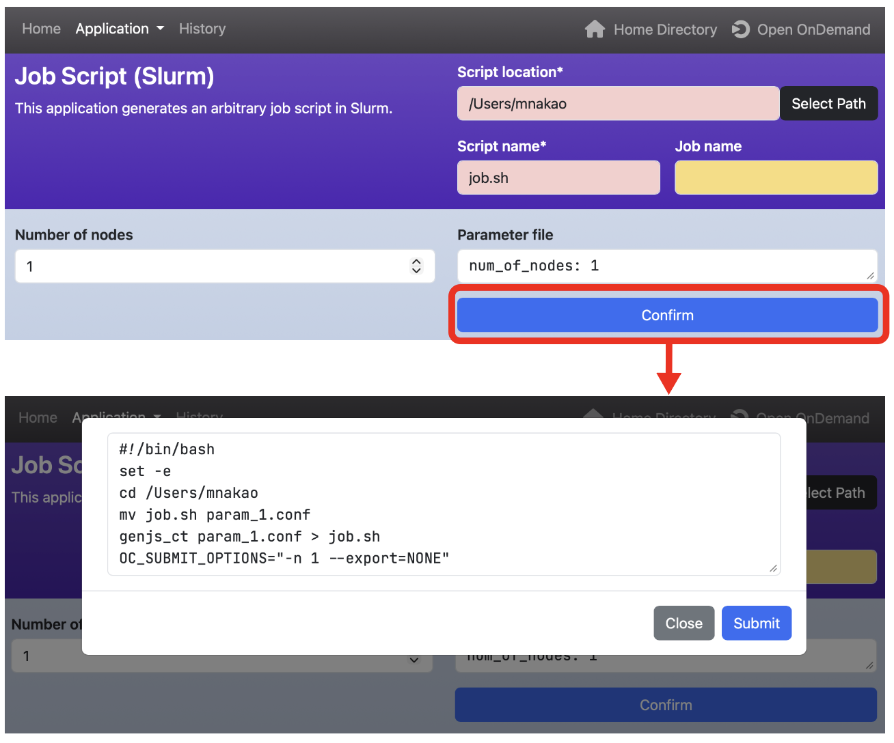
なお、scriptセクションでaction: saveも設定した場合、scriptセクションの内容を保存した後、submitセクションの内容を実行するという動作になります。「Confirm」の画面下のボタンは下記のように「Submit」から「Save」という表示になります。
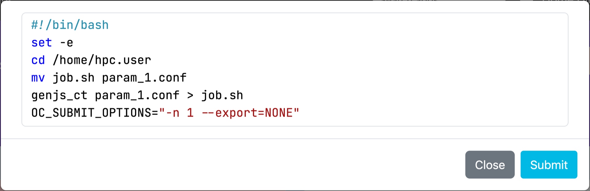
7.1. 空のスクリプトの警告
ユーザがフォームを投入するとき、すなわち「Submit」ボタン、またはaction: confirmのアプリケーションで確認のダイアログ内にある「Submit」ボタンがクリックされたとき（「Confirm」のクリック自体はそのダイアログを開くだけです）、Open Composerはバッチスクリプトに実際のコマンドが含まれているかどうかを自動的に確認します。
行は、空行である場合、#で始まる場合（コメント、#SBATCHのディレクティブ、シバンの行）、またはmoduleで始まる場合に、定型的な行と見なされて無視されます。
実際のコマンドが見つからない場合、ジョブを投入する前にブラウザの確認のダイアログが表示されます。
No commands have been added to the batch script. Are you sure you want to submit?
「Cancel」をクリックすると、投入せずにフォームに戻ります。
「OK」をクリックすると、通常どおり投入を続行します。
この確認は自動的に行われ、デフォルトで有効です。scriptセクションでaction: saveを設定しているアプリケーションには適用されません。その場合は、ジョブを投入するのではなくファイルを保存するためです。
この警告を無効にするには、conf.yml.erbでempty_script_warning: falseを設定します。
empty_script_warning: false
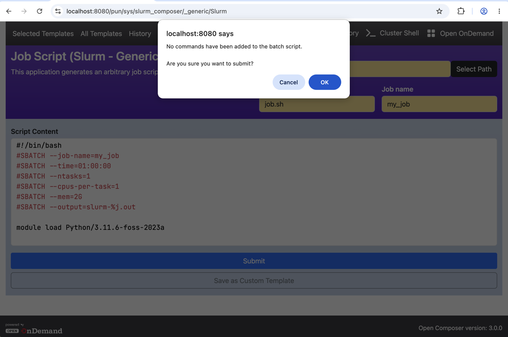
8. headerセクション
headerセクションを定義できます。ただし、lib/header.yml.erbで定義されているウィジットは必ず定義してください。
下記の例は、ジョブスクリプトを隠す新しいウィジットscript_contentを定義しています。_script_locationと_scriptはlib/header.yml.erbで定義されているウィジットです（./conf.yml.erbのclusters:に複数のクラスタが定義されている場合は、_cluster_nameの定義も必要です）。
header:
_script_location:
widget: path
value: <%= Dir.home %>
label: Script Location
show_files: false
required: true
_script:
widget: text
size : 2
label: [ Script Name, Job Name ]
value: [ job.sh, "" ]
required: [ true, false ]
script_content:
widget: checkbox
value: "Hide script content"
options:
- [ "Hide script content", "", hide-<%= OC_SCRIPT_CONTENT %> ]
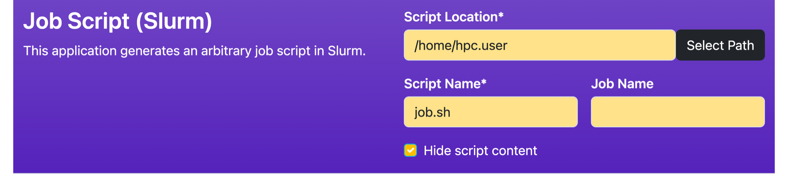
なお、上の例はアプリケーション毎にヘッダを設定する場合ですが、すべてのアプリケーションのヘッダを設定したい場合はlib/header.yml.erbを直接編集します。その場合、scriptセクションと同様に下記の特殊な変数も利用できます（headerやformセクションでも利用可能ですが、ファイル名はform.yml.erbである必要があります）。
- @OC_APP_NAME:
manifest.ymlのnameで定義しているアプリケーション名 - @OC_DIR_NAME:
manifest.ymlなどのファイルが保存されているディレクトリ名（各アプリケーションのURLの最後のパス要素）
下記に特定のアプリケーションだけ処理を変更する例を示します。
<% if @OC_DIR_NAME == "Slurm" %>
queue:
widget: select
label: Queue
options:
- [small]
- [large]
<% end %>
9. ERBと動的な設定
フォームのファイル名がform.yml.erbである場合、Open ComposerはYAMLとして解析する前に、そのファイルをEmbedded Ruby（ERB）として処理します。
これにより、ページの読み込み時にフォームの内容を動的に生成できます。例えば、シェルコマンドを実行してドロップダウンの選択肢の一覧を組み立てたり、Open Composerの設定から値を読み取ったりできます。
9.1. @confへのアクセス
変数@confはform.yml.erbの中で利用でき、conf.yml.erbから読み込まれたOpen Composerの設定のハッシュ全体を保持します。
これはページが描画されている間のみ設定されます。同じform.yml.erbはフォームの投入時にも再評価されますが、その要求では@confはnilになります。そのため、必ず安全ナビゲーション演算子（@conf&.fetch('login_node', nil)）を使用するか、参照をbegin/rescueで囲んでください。そうしないと、フォームの投入がジョブの投入ではなくNoMethodErrorのページで失敗します。
ログインノードのホスト名など、サイト固有の設定を読み取るために使用します。
<%
login_node = @conf&.fetch('login_node', nil)
%>
---
form:
my_field:
widget: text
label: Login node is <%= login_node %>
9.2. シェルコマンドによるドロップダウンの生成
ERBの中でシェルコマンドを実行し、ページの読み込み時にselectウィジットのoptionsの一覧を生成することができます。
OODのWebサーバがジョブスケジューラのデーモンに直接アクセスできない場合は、コマンドの前にログインノードへのsshを付加してください。その際は、ユーザが選択したクラスタについてOpen Composerがすでに解決済みの@login_nodeを使用します（@cluster_nameも利用できます）。@conf['login_node']は設定の生の値であり、複数のクラスタがあるサイトではクラスタ名をキーとするハッシュになります。
下記の例は、sacctmgrをSSH経由で実行し、ユーザのSlurmのアソシエーションから「Project」のドロップダウンを生成します。
アカウントが見つからない場合でもエラーにはならず、選択肢の一覧が空のselectウィジットが常に描画されます。
<%
begin
_login_node = (@conf&.fetch('login_node', nil) rescue nil)
_login_node = _login_node.is_a?(Hash) ? _login_node.values.compact.first : _login_node
_ssh_prefix = _login_node ? "ssh -o BatchMode=yes -o ConnectTimeout=10 #{_login_node}" : ""
_accounts = `#{_ssh_prefix} sacctmgr -n -P show user #{ENV['USER']} withassoc format=Account 2>/dev/null`
.split("\n").map(&:strip).reject(&:empty?).uniq.sort
rescue
_accounts = []
end
%>
---
form:
account:
widget: select
label: Project
<% if _accounts.empty? %>
options: []
<% else %>
options:
<% _accounts.each do |a| %>
- ["<%= a %>", "<%= a %>"]
<% end %>
<% end %>
script: |
#SBATCH --account=#{account}
要点は次のとおりです。
- シェルコマンドは
begin/rescueのブロックで囲み、コマンドが失敗した場合にフォームのエラーではなく空の一覧になるようにしてください。 - 一覧が空の場合は、キーを省略するのではなく
options: []と記述してください。optionsキーが無いとYAMLではnilとして解析され、実行時エラーになります。 BatchMode=yesは、SSHがパスワードの入力を待って停止することを防ぎます。ConnectTimeout=10は、ログインノードに到達できない場合にページが停止することを防ぎます。- PassengerのWebプロセスはOODにログインしているユーザとして動作するため、そのユーザのログインノードへのSSH鍵があらかじめ設定されている必要があります。
9.3. read_yamlによる基底フォームの継承
read_yaml(path)のヘルパを使用すると、別のフォームのファイル（.erbのファイルを含む）を読み込み、その内容を変更してからYAMLとして出力できます。
apps/ディレクトリのアプリケーションは、この方法で共通のSlurmの項目を2つの基底フォームのいずれかから継承しています。CPUのジョブにはSlurmBasicを、GPUのジョブにはSlurmGPUを使用します。後者はパーティションに応じたGPUの種類とGPU数の選択、および対応する--gpus-per-nodeのスクリプトの行を追加します。base_pathは、自分のアプリケーションに合う方を指定してください。
form.yml.erbの中では、ローカル変数yml_pathが、処理中のフォームのファイルのパスを保持します。この値は常に.erbの接尾辞を除いた形（例えば./apps/MyApp/form.yml）で記述されるため、File.dirname(yml_path)がそのアプリケーション自身のディレクトリになります。
<%
base_path = File.join(File.dirname(yml_path), '../SlurmBasic/form.yml')
base = read_yaml(base_path)
# 時刻のウィジットの前にアプリケーション固有の項目を挿入する
new_form = {}
base['form'].each do |k, v|
if k == 'time_days_hours_minutes'
new_form['myapp_module'] = {
'widget' => 'module_load',
'module' => 'myapp',
'label' => 'MyApp Module'
}
end
new_form[k] = v
end
base['form'] = new_form
base['script'] = base['script'].rstrip + "\n\n" + <<~'APP_SCRIPT'
module load #{myapp_module}
APP_SCRIPT
%>
<%= base.to_yaml -%>
シングルクォートのヒアドキュメント（<<~'APP_SCRIPT'）に注意してください。#{...}を含むスクリプトのテキストは、必ずシングルクォートのヒアドキュメントか、シングルクォートのRubyの文字列で記述しなければなりません。#{...}はOpen Composerのフォームの補間の構文ですが、<% %>のブロックの中でダブルクォートの文字列を使うと、Rubyが先にウィジット名を補間しようとするため、NameError: undefined local variable or method 'myapp_module'でページが失敗します。
read_yamlは、対象のファイルの.erb版が存在する場合、それを自動的に見つけて処理します。そのため、SlurmBasicのERBのヘッダ（「Project」のドロップダウンを生成する部分）は、継承された場合にも正しく実行されます。
10. 補足
- 本ページのサンプルはすべてbash言語で記述されていますが、他のシェルも利用することができます。ただし、
submitセクションだけはbash言語しか記述できません。 - ウィジット名に利用できるのは英数字とアンダースコアのみです。数字とアンダースコアを先頭に用いることもできません。末尾がアンダースコア+数字のウィジット名（例：
nodes_1）も利用しないで下さい。アプリケーションを保存するディレクトリ名も同様です。ただし、headerセクションをform.ymlで定義する場合、lib/header.yml.erbで用いられているアンダースコアで始まるウィジット名（例：_script_location）は利用可能です。 optionsで2つ目の要素がない場合、1つ目の要素が代わりに用いられます。labelとhelpのテキストは、プレーンテキストではなくHTMLとしてページに挿入されます。そのため、<br>、<b>、<code>、<a href="…" target="_blank">のリンクといった簡単なマークアップを利用できます。set-label-やset-help-の動作で与えるテキストも同様です。このため、リテラルの<は<と、リテラルの&は&と記述しなければなりません。また、label中のダブルクォートは、そのラベルがコピーされる属性を壊すため、"と記述してください。なお、後からset-required-の動作がそのラベルを書き換えた場合、ラベル中のマークアップはプレーンテキストに平坦化されます。options配列の1つ目と2つ目の要素はエスケープされ、常にそのまま表示されます。module_loadとdependent_module_selectの値は、選択されたName/versionの文字列としてcheckセクションに渡されます。そのため、@my_moduleは他のテキストの項目と同様に検証できます。scriptセクションにおいて、ある行で利用されている変数が値を持たない場合、その行は表示されません。ただし、その変数の先頭にコロンを付加する（例：#{:nodes}や#{basename(:input_file)}）と、その変数が値を持たなくても行は出力されます。- Open Composerがジョブスクリプトを投入するまでに行われる処理の順番は下記の通りです。
- アプリケーションページで「Submit」ボタンがクリックされる
empty_script_warningが有効な場合、バッチスクリプトに実際のコマンドが含まれているかどうかを確認し、含まれていなければ確認のダイアログを表示（7.1. 空のスクリプトの警告を参照）form.ymlのcheckセクションに記述されたスクリプトを実行（checkセクションがある場合）form.ymlのsubmitセクションに記述されたスクリプトを実行（submitセクションがある場合）- ジョブスクリプトが投入される